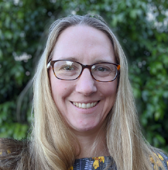

Speakers

Melita Giummarra
National Disability Insurance Agency

Sin-Ki Ng
Victoria Police
Chaired by the Brain Science Network.
September 14th, 1-2pm (Melbourne/Sydney time)
{{< youtube kphc87-hKgQ >}}
Recently, some of you joined us in conversation with two more outstanding brain scientists who have secured jobs outside of the university sector. How did they do it? What is it like outside the bubble? Whether you’re thinking about making a move, or are mentoring someone in this position, this webinar is for you. This was such an engaging and informative webinar! Below is the link for the YouTube video of the whole seminar.
Melita Giummarra
National Disability Insurance Agency
Sin-Ki Ng
Victoria Police
Chaired by the Brain Science Network.
September 14th, 1-2pm (Melbourne/Sydney time)
{{< youtube kphc87-hKgQ >}}